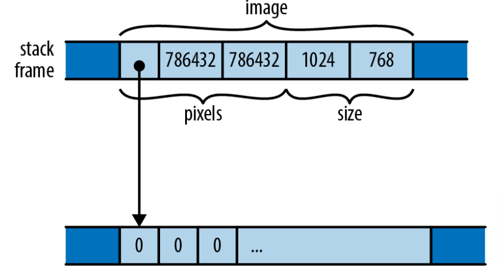

Chapter 9 结构体
Long ago, when shepherds wanted to see if two herds of sheep were isomorphic, they would look for an explicit isomorphism
——John C. Baez and James Dolan, “Categorification”
Rust的结构体，有时也称为structure，类似于C和C++中的struct类型、Python中的class、JavaScript中的对象。一个结构体把多个不同类型的值组合成单个值，所以你可以将它们作为一个整体进行处理，你也可以读取并且修改结构体的各个组成部分。一个结构体也可以有一些关联的方法来操作它的组成部分。
Rust有三种类型的结构体：命名字段(name-field)、类元组(tuple-like)、类单元(unit-like)，它们的区别在于如何引用它们的组成部分：一个命名字段结构体给每一个组件取了一个名字，而类元组结构体用它们出现的顺序来标识它们。类单元结构体没有任何组成部分，它并不常见，但可能比你想象中的更加有用。
在本章中我们将详细解释每一种结构体，并展示它们在内存中的布局。我们将介绍如何给它们添加方法、如何定义可以处理很多不同类型组件的泛型结构体、以及如何让Rust为你的结构体生成通用的trait的实现。
9.1 命名字段结构体
这里声明了一个结构体类型GrayscaleMap，它有两个字段分别命名为pixels和size。Rust的一个习惯是所有的类型包括结构体，名称中的每一个单词的首字母大写，例如GrayscaleMap，这种习惯称为大驼峰命名法（或帕斯卡命名法）。字段和方法名都是小写，用下划线分隔每个单词。这被称为蛇形命名法。
你可以用结构体表达式构造一个这种类型的值，例如：
结构体表达式以类型名称开始(GrayscaleMap)，然后在花括号中列出每一个字段的名称和值。还有一种缩写可以用同名的局部变量来充当字段：
结构体表达式GrayscaleMap { pixels, size }是GrayscaleMap { pixels: pixels, size: size }的缩写。你也可以在使用同名字段缩写的同时使用key: value语法为其它字段赋值。
访问一个结构体的字段需要使用熟悉的.运算符：
和其他item一样，结构体默认是私有的，只在它们声明的模块及其子模块中可见。你可以通过在定义前加pub来让结构体在模块之外也可见。它的每一个字段也是这样，默认也是私有的：
即使结构体被声明为pub，它的字段也可以是私有的：
其他的模块可以使用这个结构体和它的所有公有的关联函数，但不能通过字段名访问私有的字段，也不能通过结构体表达式创建新的GrayscaleMap值。也就是说，创建一个结构体的值要求所有的结构体字段都可见。这也是为什么你不能通过结构体表达式创建新的String或者Vec。这些标准类型都是结构体，但它们的字段全都是私有的。要想创建一个这些类型的值，你必须使用公有的类型关联函数，例如Vec::new()。
在创建一个命名字段结构体值的时候，你可以使用另一个相同类型的结构体来提供你省略的字段的值。在一个结构体表达式中，如果命名字段最后跟着一个.. EXPR，那么没有提到的字段将从EXPR中获取值，EXPR必须是另一个相同类型的值。假设我们有一个代表游戏中的怪物的结构体：
对程序员来说最好的童话是魔法师的学徒：一个魔法师学徒制造了一把能替他工作的扫帚，但工作完成之后却不知道该如何停止它。用斧头把扫帚劈成两半会产生两把扫帚，每个只有一半大小，但仍然像之前一样盲目地继续工作：
// 以值接受输入的扫帚，会获取所有权 fn chop(b: Broom) -> (Broom, Broom) { // 用`b`初始化`broom1`的大部分，只修改`height`。因为 // `String`不是`Copy`，因此`broom1`会获取`b`的name的所有权。 let mut broom1 = Broom { height: b.height / 2, .. b }; // 用`broom1`初始化`broom2`的大部分。因为`String`不是 // `Copy`，所以我们必须显式克隆`name` let mut broom2 = Broom { name: broom1.name.clone(), .. broom1 }; // 给两半分别起不同的名字。 broom1.name.push_str(" I"); broom2.name.push_str(" II"); (broom1, broom2) }这个定义完成之后，我们可以创建一个扫帚，将它劈成两半，然后我们会得到：
let hokey = Broom { name: "Hokey".to_string(), height: 60, width: 100, health: 100, position: (100.0, 200.0, 0.0), intent: BroomIntent::FetchWater }; let (hokey1, hokey2) = chop(hokey); assert_eq!(hokey1.name, "Hokey I"); assert_eq!(hokey1.height, 30); assert_eq!(hokey1.health, 100); assert_eq!(hokey2.name, "Hokey II"); assert_eq!(hokey2.height, 30); assert_eq!(hokey2.health, 100);新的hokey1和hokey2扫帚接收到了新的调整之后的名字，高度减半，其他的值都和原来一样。
9.2 类元组结构体
表达式Bounds(1024, 768)看起来像一个函数调用，实际上它就是：定义这个类型也会隐式地定义一个同名函数：
在底层，命名字段结构体和类元组结构体非常相似。到底用哪一个取决于可读性、二义性和简洁性。如果你将频繁使用.运算符来获取值的组成部分，那么通过名称来标识字段会增强可读性，也更不容易写错。如果你通常用模式匹配来获取元素，那么类元组结构体可以漂亮地完成工作。
使用这种类型表示ASCII字符串比简单的传递Vec<u8>缓冲区好得多，还可以在注释中表明这个类型到底是什么含义。新类型可以帮助Rust捕获其他字节缓冲区被传给期望ASCII文本的函数的错误。我们将在第22章中给出一个使用新类型来实现高效的类型转换的例子。
9.3 类单元结构体
一个这种类型的值不占用任何内存，类似于单元类型()。Rust不需要考虑怎么在内存中存储类单元结构体，也不需要生成操作它们的代码，因为它可以仅从其类型中得知它可能需要了解的有关值的所有信息。但从逻辑上讲，一个空的结构体和其他的有值的类型没有什么区别——或者更精确地说，一个这样的类型就是一个单独的值：
当在字段和元素一节中介绍..运算符时，你已经遇到过一个类单元结构体了。表达式3..5是结构体值Range { start: 3, end: 5 }的缩写，而表达式..两端都省略的情况下，就是类单元结构体值RangeFull的缩写。
当和trait一起使用时，类单元结构体会变得很有用。我们将在第11章中介绍trait。
9.4 结构体布局
在内存中，命名字段结构体和类元组结构体是同样的东西：一些可能不同类型的值的集合，以一种特殊的方式分布在内存中。例如，我们之前在这一章中定义的这个结构体：
一个GrayscaleMap按照如图9-1的布局分布在内存中。

与C和C++不同，Rust对于如何在内存中布局结构体字段或元素没有任何确切的保证，这里的图只是展示了其中一种可能的排列。然而Rust确实保证了直接在结构体的内存块里存储字段的值。JavaScript、Python和Java将会把pixels和size值分别放在它们自己的堆上分配的内存块中，然后让GrayscaleMap的字段指向他们。而Rust会直接把pixels和size嵌入到GrayscaleMap值里。只有pixels vector持有的堆上分配的缓冲区保留着自己的块。
你可以使用#[repr(C)]属性来要求Rust用一种与C和C++兼容的方式布局结构体。我们将会在第23章中详细介绍这些。
9.5 使用impl定义方法
在本书中，我们已经在很多类型的值上调用过方法。我们使用v.push(e)把元素添加进vector，使用v.len()获取它的长度，使用r.expect("msg")检查Result的值是否是错误值，等等。你可以为你自己的结构体类型定义方法。与C++或Java那种直接出现在结构体定义内部的方式不同，Rust的方法在一个单独的impl块中定义。
一个impl块就是一些fn定义的结合，每一个函数都将成为这个结构体的一个方法。例如，这里我们定义了一个公有的结构体Queue，然后为它定义了两个公有的方法：push和pop：
/// 一个先进先出的字符队列 pub struct Queue { older: Vec<char>, // 旧的元素，越旧越靠后 younger: Vec<char> // 新的元素，越新越靠后 } impl Queue { /// 将一个字符添加到队列的尾部。 pub fn push(&mut self, c: char) { self.younger.push(c); } /// 移出队列最前端的元素，如果有字符被移出就返回`Some(c)`， /// 否则如果队列为空就返回`None`。 pub fn pop(&mut self) -> Option<char> { if self.older.is_empty() { if self.younger.is_empty() { return None; } // 将新的元素都移动到旧的元素里， // 并且反转顺序。 use std::mem::swap; swap(&mut self.older, &mut self.younger); self.older.reverse(); } // 现在旧的元素保证不为空。Vec的pop方法 // 已经返回了一个Option，因此不用再处理 self.older.pop() } }在impl块中定义的函数被称为关联函数，因为它们被关联到特定的类型。与之相反的是自由函数，也就是不在impl块中定义的函数。
Rust将调用方法的值作为第一个参数传给方法，它的参数名必须是self。因为self的类型很明显是impl块外面的结构体类型，或者是其引用，所以Rust允许你省略类型，用self、&self、&mut self分别作为self: Queue、self: &Queue、self: &mut Queue的缩写。如果你喜欢的话也可以使用非缩写的形式，但几乎所有的Rust代码都是用缩写形式。
在我们的示例中，push和pop方法中通过self.older和self.younger引用了Queue的字段。与C++或Java中“this”对象的成员直接在方法内可见不同，Rust方法中必须显式使用self来引用字段，这和Python方法中self的用法、JavaScript方法中this的用法类似。
因为push和pop需要修改Queue，所以它们都以&mut self传参。然而，当你调用这两个方法时，你不需要手动借用可变引用，普通的方法调用语法会自动进行隐式转换。因此有了这些定义之后，你可以像这样使用Queue：
为了满足push方法的self参数要求，直接写q.push(...)会借用q的可变引用，就像你写了(&mut q).push(...)一样。
如果一个方法不需要修改self，那么你可以以共享引用获取参数。例如：
或者，如果一个方法想获取self的所有权，它可以以值传递self：
调用这个split方法看起来和调用其他方法一样：
但是注意，因为split以值获取self，这会把q中的Queue值移动走，导致q变为未初始化。因为split的self现在拥有了这个队列，因此它可以把两个单独的vector移动出来并返回给调用者。
有时，像这样以值传递self，或者以引用传递都不能满足我们的需求，因此Rust还允许你通过智能指针类型传递self。
9.5.1 以Box、Rc、Arc传递Self
一个方法的self参数还可以是Box<Self>、Rc<Self>、Arc<Self>。这些方法只能在相应指针类型上调用。调用这些方法会传递指针的所有权。
你通常不需要这么做。一个以引用传递self的方法可以在任何智能指针类型上正常调用：
对于方法调用和字段访问，Rust自动从智能指针类型例如Box、Rc和Arc借用一个引用，因此&self和&mut self通常总是正确的方法签名，再加上偶尔用到的self。
但如果这个方法的意图涉及管理指针的所有权呢？假设我们有一个像这样的节点组成的树，类似某种彻底简化的XML：
每一个节点都有一个tag来指示它是什么类型的节点，还有一个子节点的vector通过引用计数指针来允许共享，并让生命周期变得更灵活。
通常我们会实现一个方法让它向自己的列表中添加一个子节点，但现在让我们把角色颠倒过来，给Node实现一个把它自己添加到别的Node的子节点中的方法。我们可以写：
但这个方法并不能让人满意。这个方法调用了Rc::new来分配新的堆空间并且把self移动进去，但如果调用者已经有了一个Rc<Node>，这些操作就都不是必须的：我们应该只递增引用计数然后把指针加到vector里。Rc的全部意义不就是实现共享吗？
我们可以这样写：
如果调用者已经是Rc<Node>类型，那它可以直接调用append_to，以值传递Rc：
这会把shared_node的所有权传递给方法：引用计数不会发生变化，也不会有新的内存分配。
克隆Rc只会递增引用计数，没有堆分配或者拷贝。但当调用返回时shared_node和parent
的子节点的vector现在指向同一个Node。
最后，如果调用者现在拥有一个Node，那么它必须先创建一个Rc再调用方法：
把append_to方法的签名设为Rc<Self>可以让调用者知道Node的需求。然后调用者可以用最小化内存分配和引用计数调整的方式来调用：
-
•
如果可以传递Rc的所有权，就直接在指针上调用。
-
•
如果需要保留Rc的所有权，就递增引用计数后再调用。
-
•
如果只拥有Node，那么必须先调用Rc::new来分配堆空间然后把Node移动进去。因为parent必须通过Rc<Node>指针引用它的子节点，所以这一步最终肯定是必须的。
再重复一遍，对于大多数方法，&self、&mut self、和self（以值传参）就能满足你的需求。但如果一个方法的目的是影响值的所有权，使用其他指针类型的self可能是正确的选择。
9.5.2 类型关联函数
impl块里定义的函数也可以没有self参数。这些参数仍然和类型关联，因为它们也是在impl块中定义的。但它们不是方法，因为它们没有self参数。为了将它们和方法区别开来，我们称它们为类型关联函数。
它们通常用于提供构造函数，例如：
Rust的传统是构造函数都叫new，我们已经见过了Vec::new、Box::new、HashMap::new，等等。但new这个名字本身并没有什么特殊的地方。它并不是关键字，而且一个类型经常还有其他名字的关联函数作为构造函数，例如Vec::with_capacity。
尽管一个类型可以有很多个分开的impl块，但它们必须在定义类型的那个crate中。然而，Rust确实允许你将自己定义的方法附加到其他类型，我们将在第11章介绍怎么做到这一点。
如果你习惯写C++或Java，你可能会觉得将类型的方法和定义分离开来很奇怪，但这么做确实有以下优势：
-
•
你总是能很容易的找到一个类型的数据成员。在很大的C++类定义中，你可能需要浏览几百行成员成员函数的定义来确保你没有遗漏数据成员。而在Rust中，所有数据成员都在一个地方。
-
•
尽管我们可以很容易想象把方法定义添加到命名字段结构体的定义中，但类元组结构体和类单元结构体却不是这样。将方法拿出来放在一个impl块中可以让这三种结构体共用唯一一种语法。事实上，Rust还使用这套语法为不是结构体的类型定义方法，例如enum结构体和基本类型例如i32。（任何类型都可以有方法的事实是Rust中不使用术语对象，而是更喜欢把一切称为值的原因之一。）
-
•
同样的impl语法还可以很容易地用于实现trait，我们将在第11章中介绍。
9.6 关联常量
Rust的类型系统还采用了C#和Java等语言中的一个特性，就是关联到类型而不是关联到类型实例的值。在Rust中，它们被称为关联常量。
正如它的名字一样，关联常量是常量值。它们通常用来表示某一个类型中使用最广泛的值。例如，你可以定义一个二维的向量用于线性代数，并为它定义一个关联的单位向量：
这些值被关联到类型本身，你可以在不创建Vector2的实例的情况下使用它们。和类型关联方法一样，引用它们的方法是类型的名称再加上它们的名称：
9.7 泛型结构体
我们之前的Queue定义并不能令人满意：它被用来存储字符，但它却没有任何和字符相关的方法。如果我们要定义另一个存储String值的结构体，那么除了char要换成String之外，剩下的代码完全相同。重复定义将会浪费时间。
幸运的是，Rust的结构体可以是泛型的，这意味着它们的定义只是一个模板，你可以把任何类型塞进去。例如，这里有一个可以存储任何类型的值的Queue的定义：
你可以将Queue<T>中的<T>读作“对于任意类型T”。因此这个定义读作“对于任意类型T，一个Queue<T>有两个Vec<T>类型的字段。”例如，在Queue<String>中，T是String，所以older和younger的类型都是Vec<String>。在Queue<char>中T是char，我们就得到了一个和一开始的char类型特定的定义完全相同的结构体。事实上，Vec本身就是一个用这种方式定义的泛型结构体。
在泛型结构体的定义中，¡尖括号¿里的类型名被称为类型参数。一个泛型结构体的impl块看起来像这样：
你可以将impl<T> Queue<T>这一行读作“对于任意类型T，有一些Queue<T>可用的关联方法”。然后，你可以在关联函数的定义中将类型参数T用作一个类型。
这种语法看起来好像有些重复，但impl<T>能更清晰地表达出impl块覆盖了任意的类型T，这能将它和为特定种类的Queue编写的impl块区分开来，例如：
这个impl块头读作“这里有一些Queue<f64>特定的关联方法”。这样就给Queue<f64>添加了一个sum方法，而其它种类的Queue并没有这个方法。
我们已经在之前的代码中使用过Rust的self参数的缩写形式。这里Queue<T>如果写出类型显得有些啰嗦。作为另一种缩写，每一个impl块，不管是不是泛型的，都定义了特殊的类型参数Self（注意大驼峰风格的名称）来表示我们要添加方法的类型。在之前的代码中，Self将是Queue<T>，因此我们可以进一步简化Queue::new的定义：
你可能已经注意到了，在new的函数体内，我们不需要在构造表达式中写出类型参数，简单地写Queue { ... }就足够了。这是因为Rust的类型推导发挥了作用：因为函数的返回值类型只能有一种可能，就是Queue<T>，所以Rust会自动为我们提供参数。然而，你必须总是在函数签名和类型定义中指明类型参数。Rust不会推断它们，相反，它将这些已知的类型作为基础来推断那些函数体内的类型。
Self也可以用于这种方式：我们可以写Self { ... }。你觉得哪种形式更容易理解就可以用哪种。
但在实践中，通常可以让Rust自动帮你推断类型：
事实上，这正是整本书中我们使用Vec的方式。
并不只有结构体可以是泛型的。枚举也可以有类型参数，语法也非常的相似。我们将在枚举一节中详细介绍。
9.8 有生命周期参数的结构体
正如我们在包含引用的结构体一节中讨论过的一样，如果一个结构体类型中包含引用，你必须指明那些引用的生命周期。例如，这里有一个存储切片中最大和最小元素的引用的结构体：
之前，我们建议你将类似struct Queue<T>的声明看作是对于任意类型T，你都可以构建一个Queue<T>来存储该类型。类似的，你可以将struct Extrema<’elt>看作对于任意生命周期’elt，你都可以构建一个Extrema<’elt>来存储生命周期为’elt的引用。
这里有一个函数来扫描一个切片并返回一个指向其中元素的Extrema值：
这里，find_extrema借用了slice的元素。因为slice的生命周期是’s，所以我们返回的Extrema结构体中的引用的生命周期也是’s。Rust总是会为调用推断生命周期参数，因此调用find_extrema并不需要提到它们：
因为返回值和参数使用相同的生命周期非常常见，所以当只有一种可能时Rust允许我们省略生命周期。我们还可以在不改变含义的情况下将find_extrema的签名写成这样：
诚然，我们也可能是想返回Extrema<’static>，但这并不是通常的情况。Rust只为通常的情况提供了一个缩写。
9.9 为结构体类型派生常见的trait
然而，如果你真的开始使用这个Point类型，你将很快发现它使用起来很痛苦。按照上面的写法，Point既不能拷贝也不能克隆。你不能用println!("{:?}", point);打印它，它也不支持==和!=运算符。
在Rust中这些特性都有一个名字——Copy、Clone、Debug、PartialEq。它们被称为trait。在第11章中，我们将展示如何为你自己的结构体手动实现trait。但这个例子中出现的标准trait，以及其它一些trait，你不需要手动实现它们，除非你想要一些自定义行为。Rust可以自动为你实现它们。只需要为结构体添加#[derive]属性：
这些trait中的任何一个都可以自动实现，前提是这个结构体的所有字段都实现了那个trait。我们可以要求Rust为Point派生PartialEq，是因为它的两个字段都是f64类型，这个类型已经实现了PartialEq。
Rust还可以派生PartialOrd，它可以支持比较运算符<、>、<=和>=。我们没有这么做，是因为比较两个点来判断其中一个是否“小于”另一个是一件很奇怪的事。因此我们选择让Point值不支持那些比较运算符。像这样的情况也是Rust让我们自己写#[derive]属性而不是直接自动派生所有可用的trait的原因之一。另一个原因是实现一个trait将自动变为公有的特性。因此可复制性、可克隆性等都将是结构体公共API的一部分，应该慎重选择。
我们将在第13章详细介绍Rust的标准trait并解释哪些可以用#[derive]自动实现。
9.10 内部可变性
可变性和其他东西一样：如果限制太过宽松就会导致问题，但你又总是希望它能放宽一点。例如，假设你的蜘蛛机器人控制系统是一个中心化的结构体SpiderRobot，这个结构体里包含设置和I/O处理。当机器人启动时它的值就被初始化，并且永远不会改变：
机器人的每一个主要系统都由一个不同的结构体处理，这些结构体都有一个指向那个SpiderRobot值的指针：
控制织网、捕食、毒液流动等的结构体都有一个Rc<SpiderRobot>智能指针。回顾一下，Rc代表引用计数,、Rc中的值总是共享的因此总是不可变的。
现在假设你想使用标准的File类型给SpiderRobot结构体添加一点日志功能。那么就会有一个问题：File值必须是mut的。所有写入它的函数都需要mut引用。
这种情况经常出现。我们需要的是一个不可变(SpiderRobot结构体)的值内有一小部分数据可变(一个File)。这被称为内部可变性。Rust为此提供了几种方式，这一节中我们将讨论最直观的两种类型： Cell<T>和RefCell<T>，这两个类型都在std::cell模块中。
Cell<T>结构体只包含单个私有的类型T的值。Cell唯一特殊的地方是即使你没有对Cell自身的mut访问权限，也可以访问和修改它里面的字段值：
Cell:new(value)
创建一个新的Cell，将给定的value移动进去。
cell.get()
返回一个cell中值的拷贝
cell.set(value)
将给定的值value存储在cell中，丢弃掉之前存储的值。这个方法以非mut引用获取self参数：
显然，这和普通的set方法不同。到目前为止，Rust告诉我们如果想要修改数据就需要mut访问权限。但同样的道理，这一处不同的细节就是Cell全部的精髓。它们是一种安全地扭曲不可变性规则的方式——既不多、也不少。
Cell还可以有一些其他的方法，你可以在它的文档中查阅。
如果你想给你的SpiderRobot添加一个简单的计数器，那么使用Cell将会很方便。你可以写：
即使是SpiderRobot的非mut方法也可以使用.get()和.set()来访问u32：
这非常简单，但并不能解决我们的日志问题。Cell不能让你调用内含值的mut方法，因为.get()方法返回的是单元里值的拷贝，所以它只能用于实现了Copy trait的类型。为了实现日志功能，我们需要一个可变的File，而File不可拷贝。
这个例子中正确的工具是RefCell。类似于Cell<T>，RefCell<T>也是一个包含单个T类型的值的泛型类型。和Cell不同的是，RefCell支持借用内部的T类型的值：
RefCell::new(value)
创建一个新的RefCell，把value移动进去。
ref_cell.borrow()
返回一个Ref<T>，它本质上是ref_cell里存储的值的一个共享引用。 如果里面的值已经有可变借用了，这个方法会panic。
ref_cell.borrow_mut()
返回一个RefMut<T>，它本质上是ref_cell里存储的值的一个可变引用。 如果里面的值已经被借用了，这个方法会panic。
ref_cell.try_borrow(), ref_cell.try_borrow_mut()
与borrow()和borrow_mut()的功能一样，但返回一个Result。当值已经有可变借用/被借用时，它们不panic，而是返回一个Err值。
同样的，RefCell还有一些其它方法，你可以在它的文档中查阅。
只有当你尝试打破Rust中mut引用必须是独占引用的规则时这两个方法才会panic。例如，这样将会panic：
为了避免panic，你可以把这两个借用放进单独的块里。这样的话，r会在你尝试借用w之前被drop。
这和普通引用的工作方式很像。唯一的不同在于普通的情况下，当你尝试借用一个变量的引用，Rust会在编译期确保你必须安全地使用引用。如果检查失败了，你会得到一个编译期错误。RefCell使用运行时检查来执行同样的规则。如果你尝试打破规则，你会得到一个panic（或者使用try_borrow和try_borrow_mut时会得到一个Err）。
现在我们已经准备好用RefCell来完善我们的SpiderRobot了：
变量file的类型是RefMut<File>。它的使用方式就像File的可变引用一样。有关写入文件的细节，见第18章。
Cell很容易使用。虽然必须调用.get()和.set()或者.borrow()和.borrow_mut()有点麻烦，但那只是我们扭曲可变性规则的代价。还有一些不是很明显但却更严重的问题：Cell——和任何包含了它们的类型——都不是线程安全的。因此Rust不允许多个线程直接访问它们。我们将在第19章中讨论到Mutex<T>、原子量和全局变量时介绍多线程中的内部可变性。
不管一个结构体有命名字段还是类元组结构体，它都是一些其他值的聚合体：如果我有一个SpiderSenses结构体，那么我就有一个指向共享的SpiderRobot结构体的Rc指针、同时还有了eyes、accelerometer等等。因此结构体的本质是单词“和(and)”：我有一个X 和(and) 一个Y。但是否有另一种类型用于单词“或(or)”呢？换句话说，当你有了一个这种类型的值时，你有了一个X 或(or) 一个Y？这样的类型太有用了以至于它们在Rust中无处不在，它们就是我们下一章要讨论的主题。